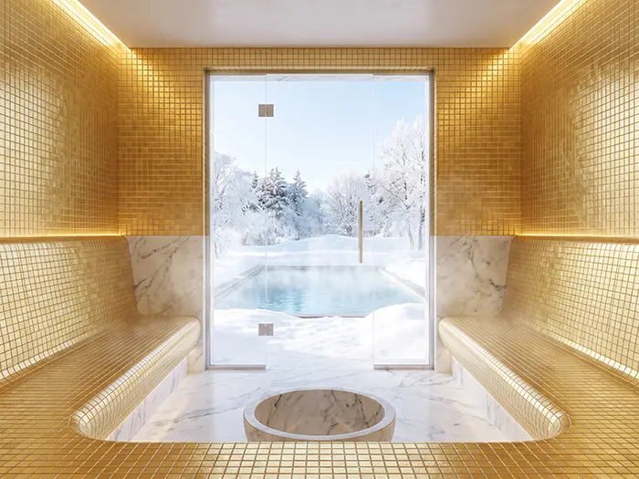
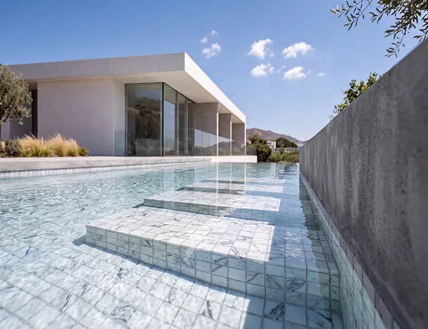
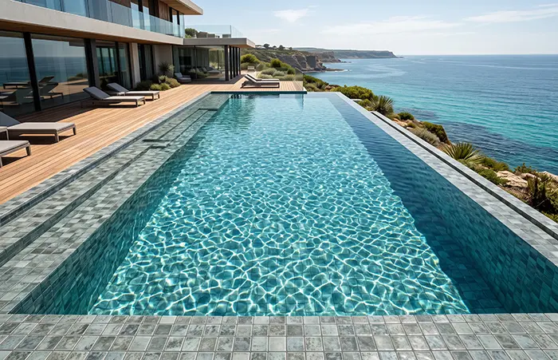
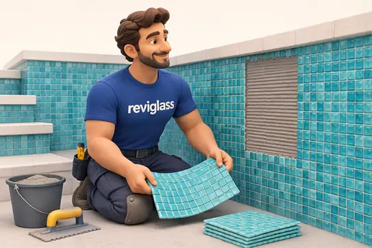

Nouveauté 2026 · 2,5 × 2,5 cm
MIDAS
L’éclat de l’or, l’élégance du verre. Une mosaïque dorée pour les piscines et la décoration.
Découvrir la collection
 Piscine Global · 17 — 20 novembre 2026
Piscine Global · 17 — 20 novembre 2026Et si votre prochaine piscine commençait par une rencontre ? Reviglass vous donne rendez-vous à Eurexpo pour découvrir ses nouvelles mosaïques, partager vos idées et imaginer vos prochains projets.

S-TONES · ST-01 CARRARADeux collections à découvrir sur le stand et dès maintenant dans notre sélection mosaïque.

L’éclat de l’or, l’élégance du verre. Une mosaïque dorée pour les piscines et la décoration.
Découvrir la collection
Le verre s’inspire de la pierre naturelle. Six nuances, une finition mate et texturée.
Découvrir la collection
Sur le stand Reviglass, découvrez les matières, observez les nuances et échangez autour des solutions techniques adaptées à vos projets de piscine.
Explorer la sélection mosaïqueEntrée gratuite sur inscription, réservée aux professionnels.
Du 17 au 20 novembre · Hall 4, stand D74.